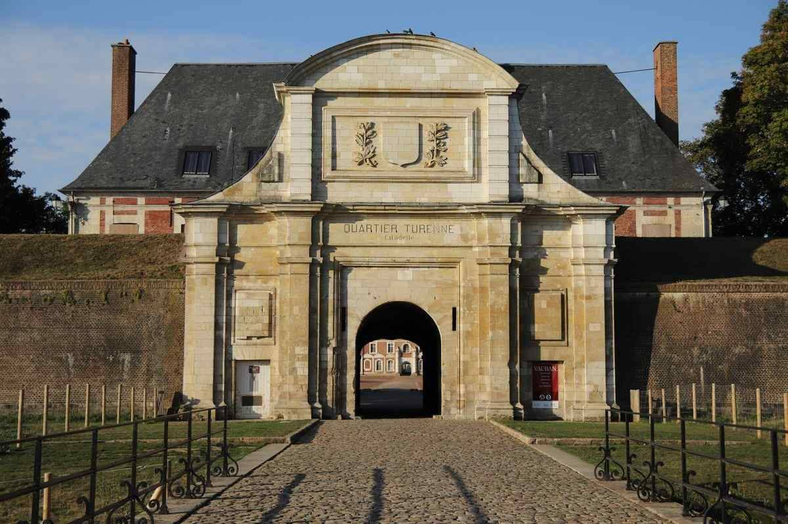
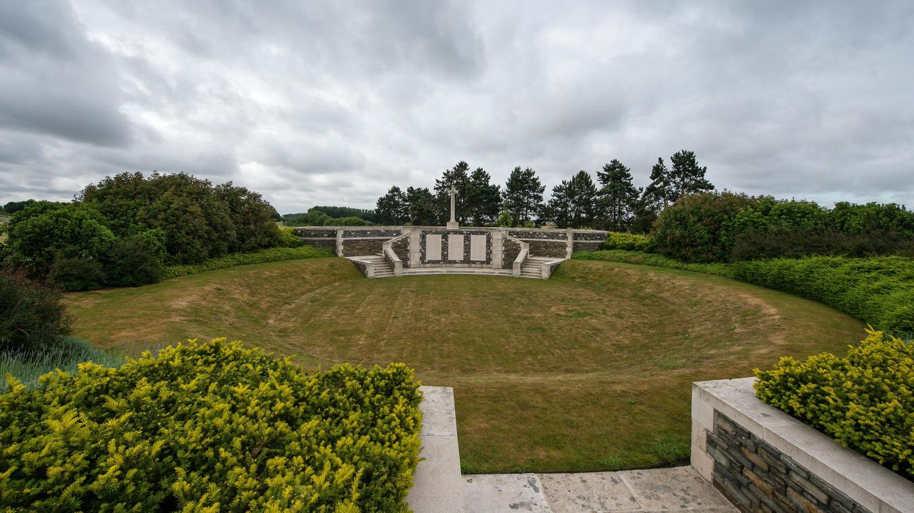

Découvrez Arras et ses monuments
Place des Héros
Une place historique de la ville d'Arras, ou se trouve de nombreux restaurants et bars, reconnu pour son architecture.

Cathédrale Notre-Dame-et-Saint-Vaast
La cathédrale d'Arras est un édifice religieux catholique situé à Arras, dans le département du Pas-de-Calais, en France.

Citadelle d'Arras
La citadelle d'Arras est un ouvrage militaire situé à Arras, dans le département du Pas-de-Calais, en France.

Lichfield Crater
Le Lichfield Crater est un cratère de la Première Guerre mondiale situé à Fampoux, dans le département du Pas-de-Calais, en France.